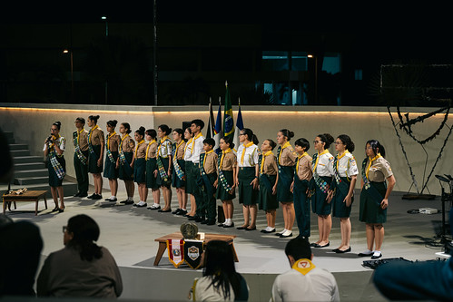
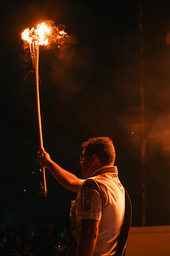
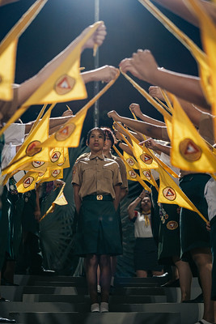
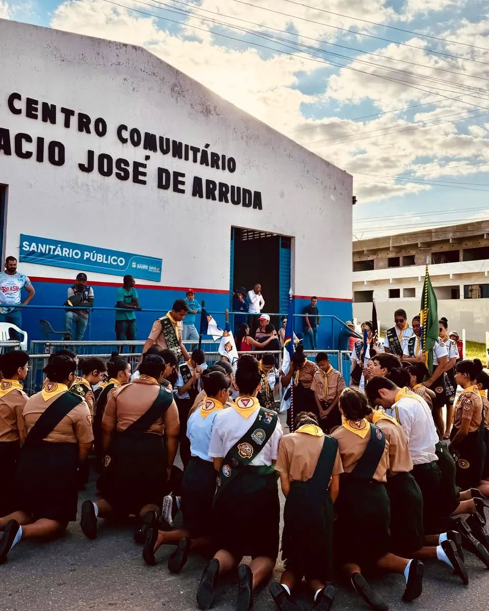

Depoimentos
Nosso Impacto
Membros Ativos
Eventos Realizados
Atividades Concluídas
Quem somos?
O Clube Guardiões do Agreste é uma organização oficial da Igreja Adventista do Sétimo Dia voltada ao público de 10 a 15 anos...
Missão
Salvar do pecado e guiar no serviço.
Visão
Ser uma geração fiel a Deus...
Valores
Disciplina, respeito, coragem, espiritualidade, trabalho em equipe e amor ao próximo.
Eventos e Atividades
- Acampamentos trimestrais regionais e locais
- Feiras de saúde...
Calendário de Eventos
- 21 de Abril, 2025 – Acampamento Regional
- 04 de Maio, 2025 – Reunião do Clube às 09h
- 18 de Maio, 2025 – Especialidade de Nós e Amarras
- 01 de Junho, 2025 – Caminhada Ecológica
Estatísticas
Desbravadores no Mundo
Mais de 1.6 milhão de participantes ativos...
Desbravadores na América do Sul
Mais de 370 mil jovens comprometidos com Deus e o próximo.
Nosso Clube
O Guardiões do Agreste já impactou a vida de dezenas de adolescentes desde sua fundação.
Nosso Instagram
Galeria de Fotos




Fale Conosco
Email: contato@guardioesdoagreste.org
Instagram: @guardioesdoagreste
Telefone: (81) 98269 5566
Endereço: Rodovia BR 232 Km 91 - Insurreição - 55695-000 Sairé-PE
Link do WhatsApp: Enviar mensagem